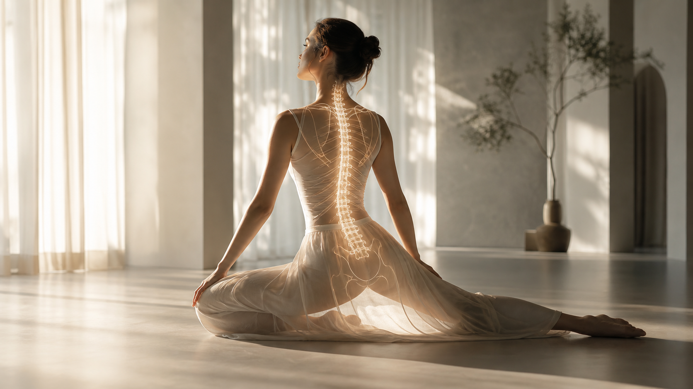

Логика карусели
Паттерн на 7 слайдов: hook, контекст, механизм, два proof-шага, итог и один CTA.
- Слова не обещают лечение.
- Визуалы держат warm wellness, а не клинику.
- Финал приглашает на знакомство, без давления.
Готовая карусель для первого касания: снимаем тревогу, объясняем механику и оставляем понятный следующий шаг.

Человек должен быстро понять: это приватно, бережно, телесно и без давления.
Паттерн на 7 слайдов: hook, контекст, механизм, два proof-шага, итог и один CTA.
Каждый кадр можно отдать дизайнеру как макетную основу или использовать как HTML-proof для дальнейшего экспорта.
Минимальная комплектация для публикации и переноса в Figma, Canva или ручной экспорт картинками.